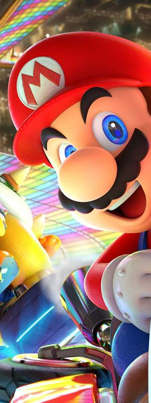
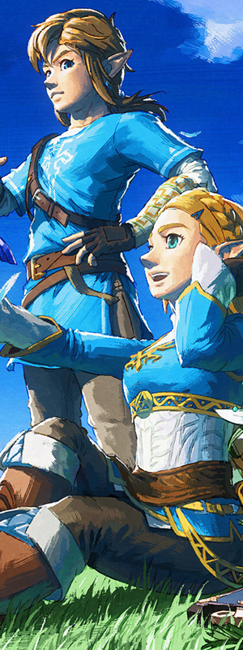
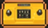

从 Color TV-Game 到 Switch 2 的静态展示。

1977年 - 任天堂最早涉足电子游戏市场的家用机系列，开启了传奇序幕。
查看详细介绍 »
1983年 - 红白机，拯救了北美游戏业，带来了《超级马里奥》《塞尔达传说》等不朽名作。
1989年 - 横空出世的掌机霸主，灰绿屏幕却承载了无数人的《俄罗斯方块》和《宝可梦》回忆。
1990年 - 超级任天堂，16位机时代的画质与音效巅峰。
1996年 - 率先踏入3D游戏时代，《超级马里奥64》重新定义了3D游戏视角。
2001年 - 32位掌机，横版卷轴游戏的终极形态。
2001年 - 小巧的紫色方块主机，拥有《塞尔达传说：风之杖》等神作。
2004年 - 双屏触控掌机，再次颠覆掌机玩法。
2006年 - 体感革命，让全年龄层都拿起了手柄。
2011年 - 无需眼镜的裸眼3D掌机，延续了掌机辉煌。
2012年 - 带有屏幕的GamePad，虽市场受挫但为Switch铺平了道路。
2017年 - 家用掌机一体化的划时代杰作，全球现象级热销。
2025年 - 新一代主机降临，续写任天堂的传奇篇章。